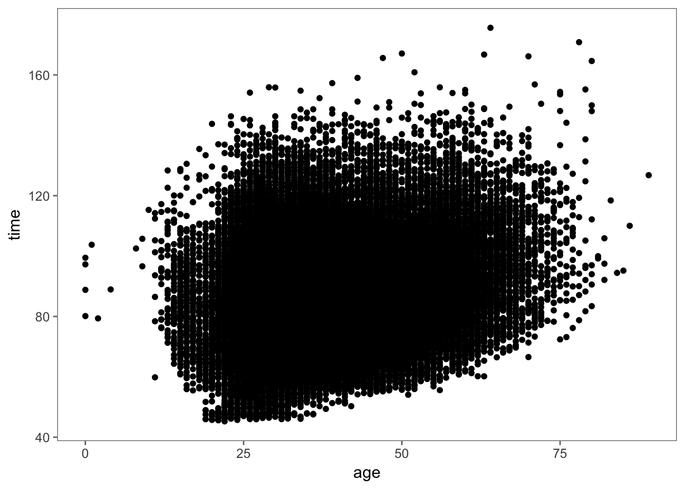
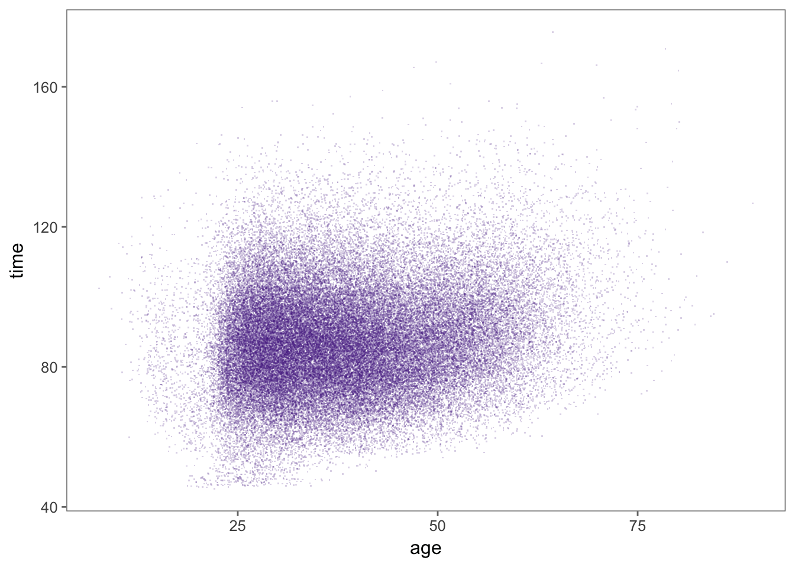
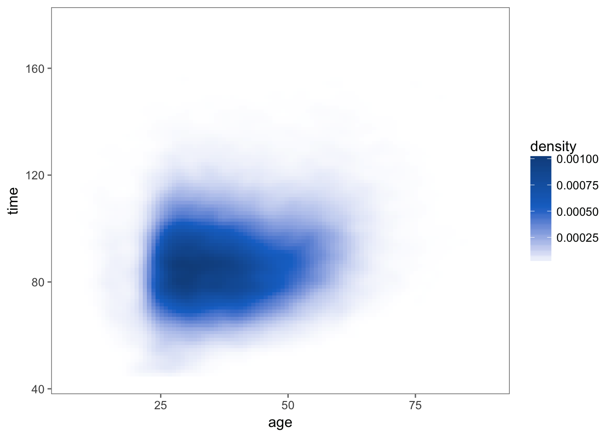
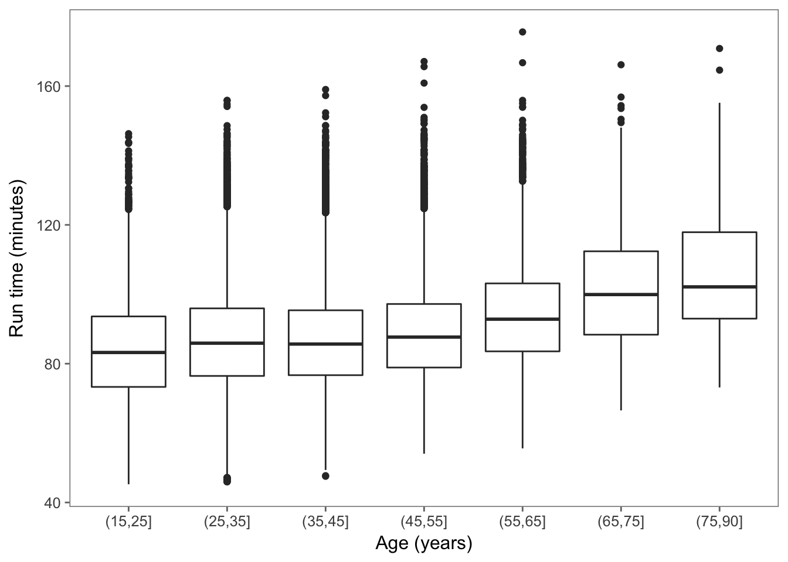
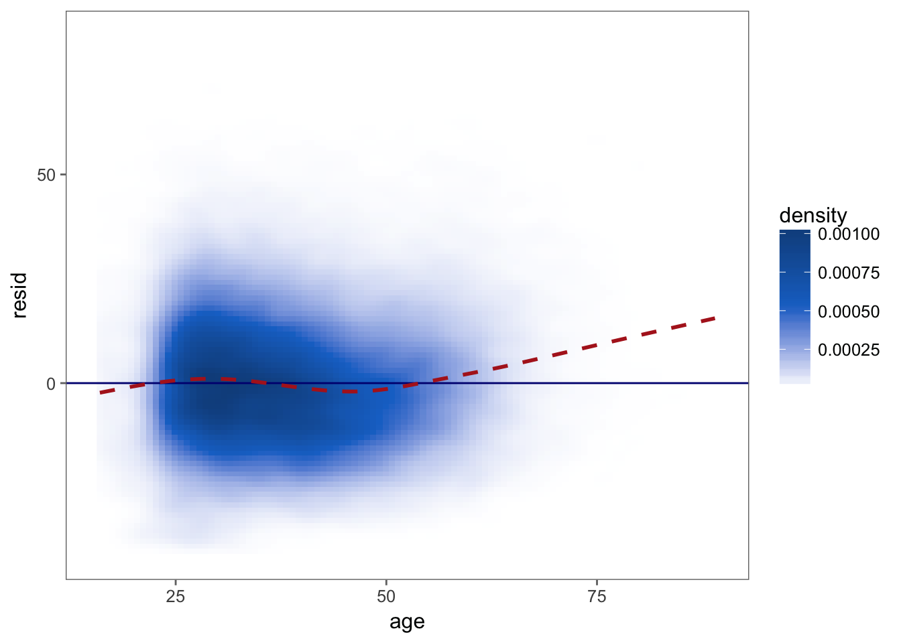

Now that we have completed the extraction of our data from the tables published on the Cherry Blossom Web site, we can begin to study the relationship between age and run time. Typically, we first examine our data graphically in a scatter plot with run time on the y-axis and age on the x-axis. We can make such a scatter plot for the male runners with the following call to ggplot().
ggplot(men_df, aes(age, time)) +
geom_point()## Warning: Removed 21 rows containing missing values (geom_point).Figure 5.1: Default Scatter Plot for Run Time vs. Age for Male Runners. This plot demonstrates that a simple scatter plot of run time by age for the 70,000 male runners leads to such severe over plotting that the shape of the data is not discernible.
The resulting plot appears in Figure 5.1. Most of the points appear as a black blob in the scatter plot because so many points have been plotted on top of each other. The shape of the distribution is obscured because we cannot see which regions of the (age, run time) space are more densely populated. Notice also the vertical stripes in the plot. These are the result of runner’s age being reported to the nearest year, which results in more over plotting. In the next section, we consider a few alterations to this default scatter plot that address the problem of over plotting.
There are several modifications we can make to the plot in Figure 5.1 to ameliorate the effect of over plotting. We can reduce the size of the plotting symbol, use transparent colors for the plotting symbol, and add a small amount of random noise to the age variable. Alternatively, we can create a plot that reveals a smoothed version of the density of the points in each region. We can also make a series of boxplots instead of a scatter plot. We demonstrate each of these approaches in this section.
men_df %>%
filter(age > 5) %>%
ggplot(aes(age, time)) +
geom_jitter(shape = '.', size = 2, alpha = 0.2, height = 0, width = 0.5, color = '#54278f')Figure 5.2: Revised Scatter Plot of Male Runners. This plot revises the simple scatter plot by changing the plotting symbol from a circle to a point, reducing the size of the plotting symbol, using a transparent color for the points, and adding a small amount of random noise to age. Now we see the shape of the high density region containing most of the runners and the slight upward trend of time with increasing age.
Our first plot appears in Figure 5.2. This plot is much improved from the initial one in Figure 5.1. We can see where the bulk of the runners are, including what appears to be a slight upward curvature in run time as age increases and a skew distribution of run time given age. We can also see the small group of runners with very fast run times.
men_df %>%
filter(age > 5) %>%
ggplot(aes(age, time)) +
stat_density_2d(aes(fill = ..density..), geom = 'raster', contour = FALSE) +
scale_fill_gradientn(colors = c('white', 'dodgerblue3', 'dodgerblue4'), values = c(0, 0.5, 1))Figure 5.3: Smoothed Scatter Plot of Male Runners Race Times vs. Age. This plot offers an alternative to the scatter plot that uses jittering and transparent color to ameliorate the over plotting. Here there is no need to jitter age because the smoothing action essentially does that for us by spreading an individual runner’s (age, run time) pair over a small region. The shape of the high density region has a very similar shape to the earlier plot.
The smoothed two-dimensional density plot in Figure 5.3 shows a very similar shape to our plot in Figure 5.2.
A very different approach to these scatter plots is to graphically display summary statistics of run time for subgroups of runners with roughly the same age. Here, we group the runners into 10-year age intervals and plot the summaries for each subgroup in the form of a boxplot (see Figure 5.4). With these side-by-side boxplots, the size of the data does not obscure the main features, e.g., the quartiles and tails for an age group. To make these boxplots, we categorize age using the cut() function. We first remove those runners under 15 or who have unrealistic run times. Then we categorize age with
men_df_agecat <- men_df %>%
filter(time > 30, !is.na(age), age > 15) %>%
mutate(age_cat = cut(age, breaks = c(seq(15, 75, 10), 90)))
table(men_df_agecat$age_cat)##
## (15,25] (25,35] (35,45] (45,55] (55,65] (65,75] (75,90]
## 5804 25434 20535 12212 5001 752 69This new variable, age_cat, is a factor that categorizes age into 10-year intervals with the exception of all of those over 75 being lumped together into one interval.
We see in Figure 5.4 that we have created a series of boxplots rather than a scatter plot. We observe in this plot that the upper quartile increases faster with age than the median and lower quartile. In the next section, we try summarizing this relationship between age and run time more formally.
men_df_agecat %>%
ggplot(aes(age_cat, time)) +
geom_boxplot() +
labs(x = 'Age (years)', y = 'Run time (minutes)')Figure 5.4: Side-by-Side Boxplots of Male Runners’ Run Time vs. Age. This sequence of boxplots shows the quartiles of time for men grouped into 10-year age intervals. As age increases, all the quartiles increase. However, the box becomes asymmetrical with age, which indicates that the upper quartile increases faster than the median and lower quartile.
As seen in Figure 5.4, the average performance seems to curve upward with age. A simple linear model may be inadequate to describe this relationship. To see how well the simple linear model captures the relationship (or not) between run time and age, we fit the model with
lm_age <- lm(time ~ age, data = men_df_agecat)The lm() function performs least squares to find the best fitting line to our data, which we see has the following intercept and slope:
lm_age$coefficients## (Intercept) age
## 78.7570864 0.2252816We have assigned the return value from lm() to lm_age. This object contains the coefficients from the fit, predicted values, residuals, and other information about the linear least squares fit of run time to age. We can retrieve a brief summary of the fit with a call to summary() as follows:
summary(lm_age)##
## Call:
## lm(formula = time ~ age, data = men_df_agecat)
##
## Residuals:
## Min 1Q Median 3Q Max
## -40.333 -10.220 -0.952 9.102 82.425
##
## Coefficients:
## Estimate Std. Error t value Pr(>|t|)
## (Intercept) 78.757086 0.207692 379.20 <2e-16 ***
## age 0.225282 0.005169 43.58 <2e-16 ***
## ---
## Signif. codes: 0 '***' 0.001 '**' 0.01 '*' 0.05 '.' 0.1 ' ' 1
##
## Residual standard error: 14.77 on 69805 degrees of freedom
## Multiple R-squared: 0.02649, Adjusted R-squared: 0.02647
## F-statistic: 1899 on 1 and 69805 DF, p-value: < 2.2e-16To help us assess how well the simple linear model fits the data we plot the residuals against age. As with the original scatter plot of run time against age, we need to address the issue of over plotting. Further, to help us see any curvature in the residuals, we add to the plot a horizontal line at 0. We do this with
p <- men_df_agecat %>%
modelr::add_residuals(lm_age) %>%
ggplot(aes(age, resid)) +
stat_density_2d(aes(fill = ..density..), geom = 'raster', contour = FALSE) +
scale_fill_gradientn(colors = c('white', 'dodgerblue3', 'dodgerblue4'), values = c(0, 0.5, 1)) +
geom_hline(yintercept = 0, color = 'navy')To help us further discern any pattern in the residuals, we augment this residual plot with a smooth curve of local averages of the residuals from the fit. That is, for a particular age, say 37, we take a weighted average of the residuals for those runners with an age in a small neighborhood of 37. Such a locally fitted curve allows us to better see deviations in the pattern of residuals.
p + geom_smooth(se = FALSE, linetype = 'dashed', color = 'firebrick')## `geom_smooth()` using method = 'gam'Figure 5.5: Residual Plot from Fitting a Simple Linear Model of Performance to Age. Shown here is a smoothed scatter plot of the residuals from the fit of the simple linear model of run time to age for male runners who are 15 to 80 years old. Overlaid on the scatter plot are two curves. The “curve” in dark blue is a solid horizontal line at \(y = 0\). The red dashed curve is a local smooth of the residuals.
The augmented smoothed scatter plot appears in Figure 5.5. We see that the simple linear model tends to underestimate the run time for men over 60. This confirms our observations from the boxplot and smooth scatter plot of the nonlinear trend in run time. The simple linear model is not able to capture the change in performance with age.
We consider two approaches to a more complex fit: a piecewise linear model and a nonparametric smooth curve. For the latter, we simply take local weighted averages of time as age varies, just as we smoothed the residuals from the linear fit. We use loess() to do this with
men_res_lo <- loess(time ~ age, data = men_df_agecat)and we make predictions for all ages ranging from 20 to 80 with
age20to80 <- 20:80
men_res_lo_pr <- predict(men_res_lo, data.frame(age = age20to80))The curve appears in Figure ??.